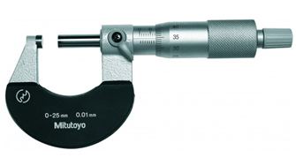
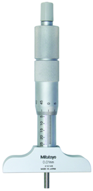
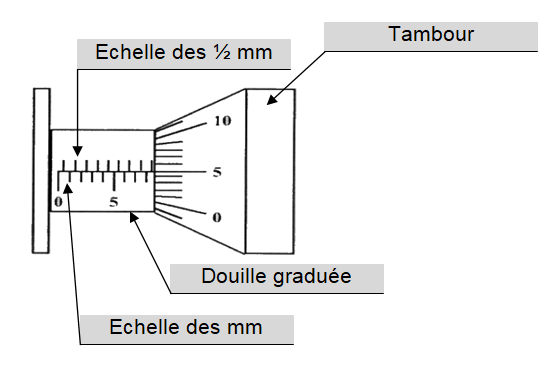
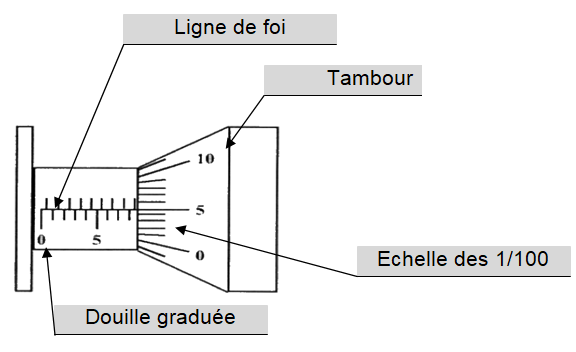
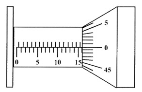
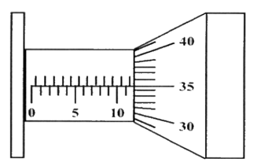

|
|
|
|
| Le
micromètre (lecture) |
|
|
|
|
|
|
|
|
|
|
|
Le
micromètre est un instrument de mesure directe permettant de
mesurer des dimensions dans une tolérance de plus ou moins
1/100e de millimètre pour des mesures allant
jusqu’à 1500 mm. Il existe des
micromètres donc la précision de lecture est le
micron (µ m) soit 0,001 mm.
|
|
|
|
|
|
Ils sont
constitués d’une touche fixe et
d’une touche mobile actionnée par un tambour muni
d’un limiteur de couple afin d’assurer une pression
constante lors des mesures.
|
|
|
|
|
|
Il se compose
:
- d’une partie en U ou demi-circulaire
possédant une
touche fixe et une touche mobile, appelée broche,
actionné par un tambour ;
- d’une douille cylindrique,
graduée en
millimètre ;
- d’un tambour composé
d’une vis
micrométrique en acier traitée et
rectifiée ;
- de graduations sur la circonférence
du tambour (50
divisions) pour permettre une lecture au 1/100 ème, ce qui
correspond à ½ mm;
- d’un limiteur de couple permettant de
manœuvrer le
micromètre sans le détériorer ;
- d’un système de blocage ;
- d’un système
d’étalonnage.
|
|
|
3. |
Les
différents types de micromètres
|
|
|
Il en existe
différents types suivant la mesure à effectuer :
Micromètre
d’extérieur

pour mesurer les épaisseurs |
Micromètre
d’intérieur

pour mesurer des alésages
|
Jauge
de profondeur

pour mesurer des profondeurs de trous épaulés |
Les micromètres peuvent être comme les calibres
à coulisse à affichage numérique.
|
|
|
|
|
|
1ère
étape : la lecture des millimètres.
 |
La lecture des mm s’effectue sur
la douille graduée.
Lire la dernière graduation visible sur la douille
cotée échelle des mm.
Dans le cas de la figure, on lit 8 mm.
Lire éventuellement les ½ mm au dessus de la
ligne de foi.
Dans le cas de la figure, on lit 0.5 mm. |
2ème
étape : la lecture des 1/100 de mm (0,01
mm).
Dans ce cas, la longueur mesurée est donc : 8,55 mm.
 |
La lecture des 1/100 de mm
s’effectue sur le tambour gradué.
Le relevé de l’échelle des 1/100 est la
graduation devant la ligne de foi de la douille graduée.
Le sens de lecture du tambour gradué est dans le sens
contraire des aiguilles d’une montre.
Dans ce cas la figure, on lit 0,05
mm.
|
La valeur
pour cet exemple, est 8
+ 0,5 + 0,05 = 8,55 mm.
La valeur pour cet exemple, est
8 + 0,5 + 0,05 = 8,55 mm.
|
|
|
5. |
Principe
d'utilisation
|
|
|
- Avant la
mesure, essuyer la surface de la touche fixe et de la broche avec un
chiffon propre. Le retrait des éventuelles
poussières et particules permet une mesure
précise.
- Tenir le micromètre entre le pouce
et l’index de
la main gauche et pincer le tambour avec le pouce et l’index
de la main droite.
- Etalonner le micromètre.
- Serrer la cible entre la touche fixe et la
broche, tourner le limiteur
de couple jusqu’à ce qu’il saute.
- Lire la valeur sur
l’échelle principale
située sur la douille et sur l’échelle
du tambour.
|
|
|
|
|
 |
Douille
graduée : 16 mm
Les ½ mm : 0,0 mm
Tambour gradué : 0,00 mm
La valeur pour cet exemple, est 16
+ 0 + 0,00 = 16 mm. |
 |
Douille
graduée : 11 mm
Les ½ mm : 0,5 mm
Tambour gradué : 0,35 mm
La valeur pour cet exemple, est 11+
0,5 + 0,35 = 11,85 mm. |
|
|
|
|
|
|
|
|
|
 |
|